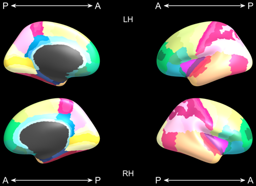

Freesurfer 6 produces cortical parcellations. This collection of functions displays the average surfaces and colours the regions of the cortical parcellations as a figure in MATLAB. The following colouring schemes are supported:
- freesurfer RGB values
- p-values, with sign determined by corresponding test statistic values
- effect sizes

- r squared
- arbitrary scalars
The folowing parcellation schemes are supported:
- Desikan-Killiany: Desikan, R. S., F. Ségonne, B. Fischl, B. T. Quinn, B. C. Dickerson, D. Blacker, R. L. Buckner, A. M. Dale, R. P. Maguire, B. T. Hyman, M. S. Albert and R. J. Killiany (2006). "An automated labeling system for subdividing the human cerebral cortex on MRI scans into gyral based regions of interest." NeuroImage 31(3): 968-980.
- Desikan-Killiany-Tourville: Klein, A. and J. Tourville (2012). "101 Labeled Brain Images and a Consistent Human Cortical Labeling Protocol." Frontiers in Neuroscience 6: 171.
- Destrieux: Destrieux, C., B. Fischl, A. Dale and E. Halgren (2010). "Automatic parcellation of human cortical gyri and sulci using standard anatomical nomenclature." Neuroimage 53(1): 1-15.
- Von Economo and Koskinas: Scholtens, L. H., M. A. de Reus, S. C. de Lange, R. Schmidt and M. P. van den Heuvel (2016). "An MRI Von Economo – Koskinas atlas." NeuroImage.

For the Desikan-Killiany and Desikan-Killiany-Tourville schemes, the highlighted regions are annotated with either their full names or shortened names. Highlighted regions will either have significant p-values for the other plots, user-specified masks can be supplied to select regions to colour and annotate.
The plots are customisable with options to change the title, legend name, group names (p-value plot).